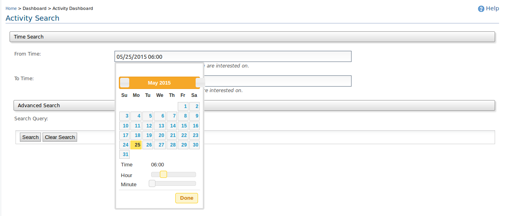
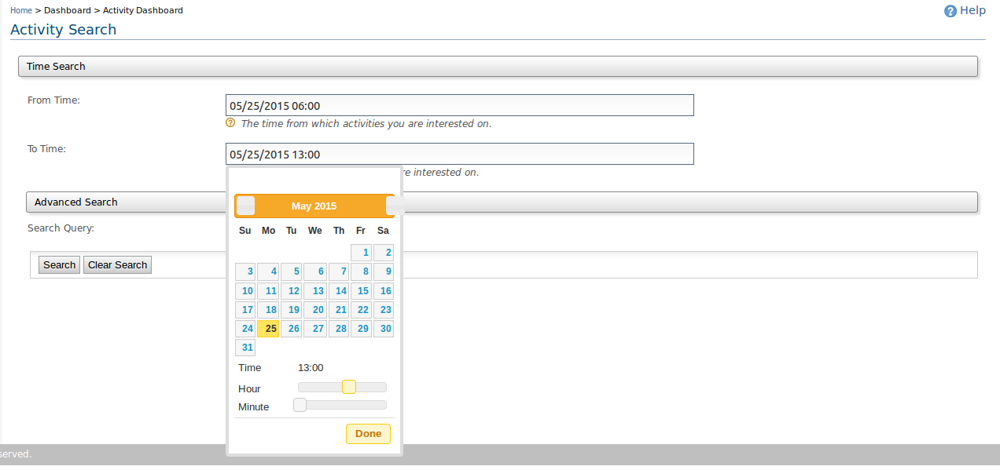
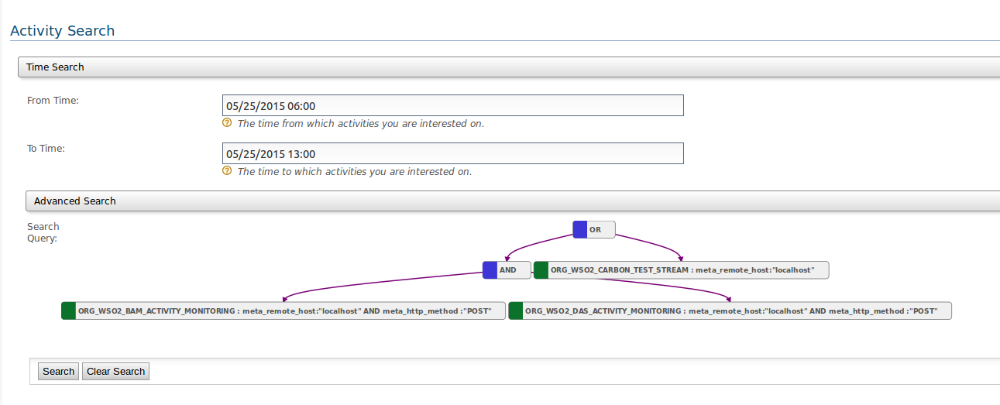
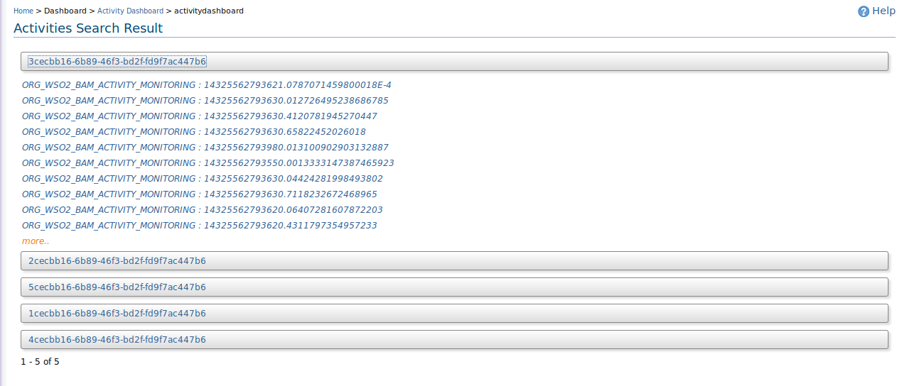
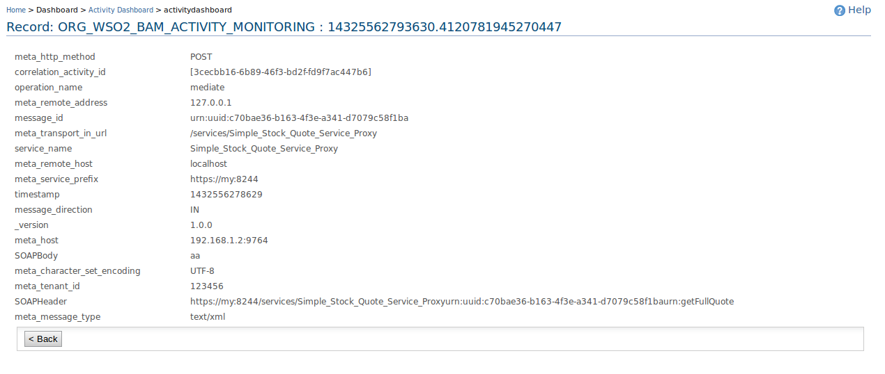

The activity monitoring dashboard is used to get the list of the events belongs to an activity and search through it results by providing an valid Lucene query.
Let?s consider an example, a transaction is being processed and going through several subsystems and if you want to find out the status of the particular transaction such as whether it has completed or at which sub system currently it?s being processed, etc can be filtered by sending the events to our WSO2 DAS with same activity ID, and then you can search through the events collected from different sub systems.
The activity monitoring dashboard groups all events which belongs to same activity id, and provide you the list of activity ids, and then you can drill down the activity id to see what are the actual events that has fired and then take your decisions based on the analysis.
Below sample use case takes you over the capabilities of activity monitoring dashboard.
If you want to use activity dashboard to search your events, then you need to define the activityId field as the ?FACET? field and enable the indexing for that field as given below.
Also you can search the activity by field, and if you want to search by any particular fields other than timestamp,
then you also need to index them appropriately. In below provided example the user is required to search by meta_host,
meta_http_method, meta_message_type, and operation_name.
Therefore the user have to enable indexes to those fields.
As we have mentioned above, the event needs to have mandatory ?activityId? field in the correlation data of the event and the field needs to be as JSON string to use it as FACET type. Therefore convert your activityId as JSON string and publish to WSO2 DAS. For example, sample JSON formed activity shown below.
If you want to perform the search within any time period, then select the data and time for ?From time? and ?To time? respectively. If you don?t select any time duration for the field, then it will search through the full time range. But it?s advisable to use this time range, if you have events collected and hence searching through the entire list of events will have some processing/memory needs.


You also can give any Lucene queries to further filter the results from the time range you have given above. You can add any number of nested queries, which spans over any number of tables. Below given is the sample query that you can search.

You will get the list of activity ids as below, and when you click on each you will see a first 10 records for the activities. If you want, you can click on view more.

Then you can click on any record that you like to view to see the full record content.
